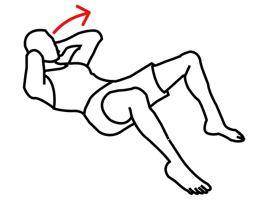

Estiramiento de la columna torácica con rodillo de espuma

Repeticiones
2 series, 20 segundos cada una.
Posición inicial
Túmbese en el suelo y coloque un rodillo de espuma entre las escápulas y el suelo. Coloque sus manos detrás de su cabeza.
Ejecución
Extienda lentamente la columna torácica manteniendo el arco natural de su espalda baja. Mantenga el estiramiento durante el tiempo requerido y luego regrese a la posición inicial.
Consejo
Debe sentir el estiramiento de los músculos pero no dolor.
Advertencia
Si tiene problemas en la columna vertebral, no se recomienda hacer este ejercicio.